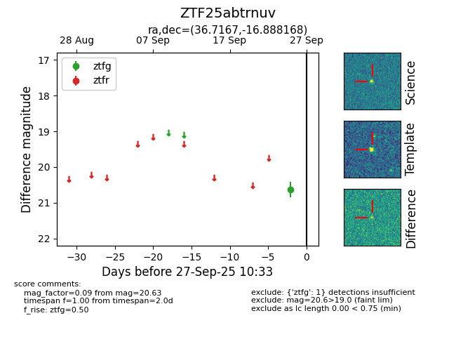

FINK: ZTF25abtrnuv
Lasair: ZTF25abtrnuv
ALeRCE: ZTF25abtrnuv
ZTF25abtrnuv (ztf,fink)
equatorial (ra, dec) = (36.7167,-16.88817)
galactic (l, b) = (192.9803,-65.68657)

last ztfg=20.63
1 ztfg detections